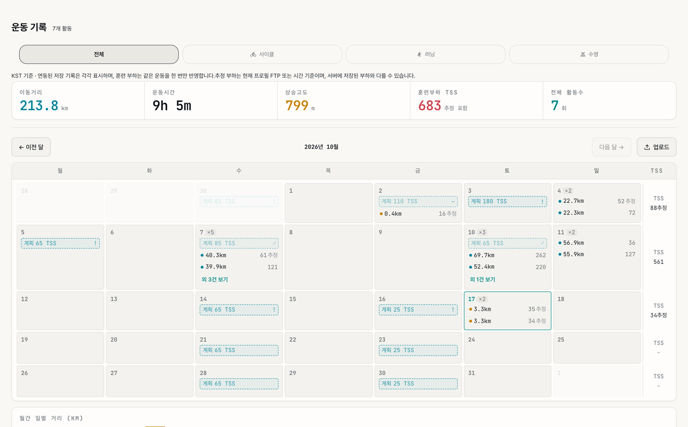
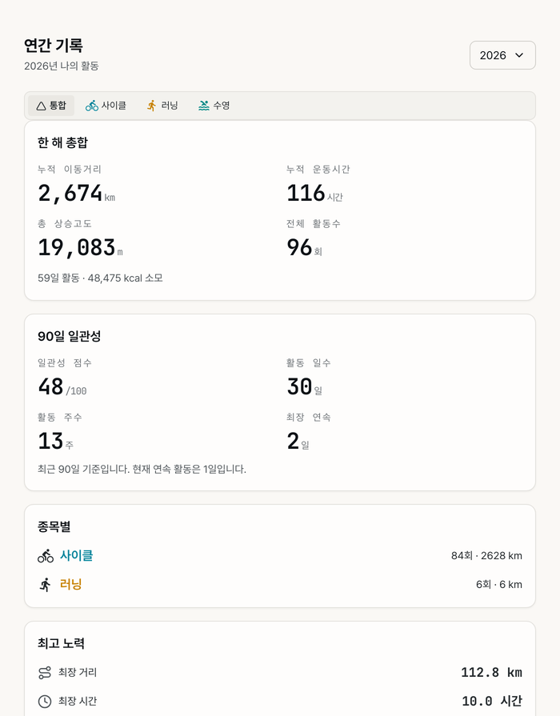
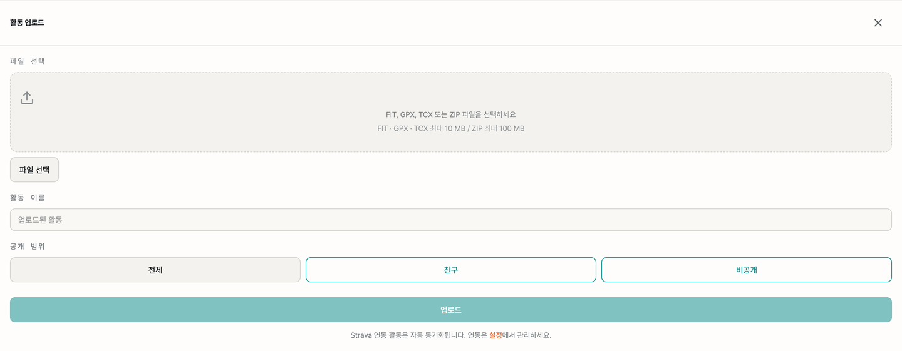

2. 기록 보기 — 홈·운동일지·연간 기록
이 장에서 할 수 있는 것
- 홈에서 최근 7일 운동량과 최근 활동을 훑어봅니다.
- 운동일지(월 캘린더)에서 날짜별 기록과 계획을 함께 봅니다.
- 연간 기록·내 프로필에서 한 해와 전체 누적 기록을 봅니다. 기록 파일도 직접 올립니다.
2.1 홈 — 최근 7일과 최근 활동
따라 하기
- 위쪽 메뉴 홈을 누릅니다.
- 오른쪽 위 종목 칩에서 사이클 또는 러닝을 고릅니다.
- 맨 위 최근 7일 활동 띠에서 이동거리 · 횟수 · 활동시간 · 획득고도를 봅니다.
- 아래 최근 활동에서 보고 싶은 기록을 눌러 상세 화면으로 갑니다(3장).
화면 읽는 법
| 위치 | 보이는 것 | 읽는 법 |
|---|---|---|
| 최근 7일 활동 | 이동거리, 라이딩횟수(러닝은 활동 횟수), 활동시간, 획득고도 | 달력의 "이번 주"가 아니라 오늘부터 거꾸로 7일의 합계입니다. 오른쪽 월간 운동일지 →로 한 달을 봅니다. |
| 최근 활동 | 활동 카드(이름, 종목, 시간, 거리·고도·속도·파워, PR 구간, 지도) | 전체 · 친구 · 본인으로 누구의 기록을 볼지 고릅니다. 카드 오른쪽 PR은 그 활동에서 개인 최고 기록을 낸 세그먼트입니다. |
| 오른쪽 · 컨디션 카드 | "사이클 · 컨디션", 체력 상태, FTP | 데이터가 모자라면 "데이터 부족"으로 나옵니다(6.4). 컨디션 보기 →로 코치 > 컨디션에 갑니다. |
| 오른쪽 · 오늘 운동 | 오늘 할 운동 요약 | 정하기 →로 코치 > 오늘 운동에 갑니다(7.2). |
| 오른쪽 · 주간 이동거리 | 최근 12주 막대그래프와 평균/주 · 최고주 · 이번 주 표(이동거리, 훈련 부하 TSS) | 막대가 고르면 꾸준한 것입니다. "≈"는 추정값이 들어 있다는 뜻, "+"는 확인한 기록만 더한 합계, "—"는 아직 확인되지 않았다는 뜻입니다. |
| 오른쪽 · 목표 카드 | 지금 목표 이름과 남은 날 | 목표 보기 →로 코치 > 목표에 갑니다(7.4). |
심박·파워가 없는 활동은 그 칸이 비어 있습니다. 빈칸은 "0으로 운동했다"는 뜻이 아니라 "원본에 그 값이 없다"는 뜻입니다.
2.2 원하는 활동 찾기
- 최근 활동 위쪽에서 전체 / 친구 / 본인 중 하나를 고릅니다. 내 기록만 보려면 본인입니다.
- 활동 검색… 칸에 코스 이름이나 지역 같은 낱말을 넣고 검색을 누릅니다.
- 날짜로 찾고 싶다면 운동일지(2.3)의 월 캘린더가 더 빠릅니다.
다른 사람의 기록은 그 사람이 공개한 범위 안에서만 보입니다(10.1).
2.3 운동일지 — 월 캘린더

따라 하기
- 오른쪽 위 아바타 > 운동일지를 누릅니다. (홈의 "월간 운동일지 →"도 같은 곳입니다.) 화면 제목은 운동 기록입니다.
- 위쪽 전체 · 사이클 · 러닝 · 수영 중 보고 싶은 종목을 고릅니다.
- ← 이전 달 / 다음 달 →로 달을 옮깁니다.
- 날짜 칸의 기록 줄을 누르면 그 활동 상세로 갑니다.
화면 읽는 법
| 표시 | 뜻 |
|---|---|
| 위쪽 요약 5칸 | 그 달의 이동거리 · 운동시간 · 상승고도 · 훈련부하 TSS · 전체 활동수 |
| 점선 상자 "계획 65 TSS" | 코치 > 계획에 잡혀 있던 그날의 운동. 끝의 표시는 실행 결과입니다 — ✓ 해냄, △ 모자람, ! 놓침, ~ 추정, ? 확인 안 됨. |
| ● 22.7km · 52 추정 | 그날의 실제 기록(거리)과 훈련 부하(TSS). "추정"은 부하를 시간·심박 등으로 추정했다는 뜻입니다. |
| ×2, ×5 | 그날 기록 수. 칸에 다 못 넣으면 "외 3건 보기"가 붙습니다. |
| 맨 오른쪽 TSS 열 | 그 주의 훈련 부하 합계 |
| 테두리가 진한 칸 | 오늘 |
위쪽 안내 문구처럼 날짜는 한국 시간(KST) 기준이며, 같은 운동이 여러 곳(앱·Strava 등)에서 들어와 따로 보여도 훈련 부하는 한 번만 셉니다.
2.4 연간 기록과 내 프로필

연간 기록
- 아바타 > 기록을 누르면 연간 기록 화면이 열립니다.
- 오른쪽 위에서 연도를, 아래 칩에서 통합 · 사이클 · 러닝 · 수영을 고릅니다.
| 카드 | 보이는 것 |
|---|---|
| 한 해 총합 | 누적 이동거리 · 누적 운동시간 · 총 상승고도 · 전체 활동수, 활동한 날 수와 소모 칼로리 |
| 90일 일관성 | 일관성 점수(100점 만점) · 활동 일수 · 활동 주수 · 최장 연속. 최근 90일 기준입니다. |
| 종목별 | 종목마다 횟수와 거리 |
| 최고 노력 | 그해 가장 길게 탄 거리, 가장 오래 한 시간 등 |
내 프로필
아바타 > 내 프로필에는 전체 활동 · 누적 이동거리 · 누적 운동시간 · 누적 상승고도와 친구, 월별 활동 기록, 최근 활동이 있습니다. 프로필 안의 프로필 · 운동일지 · 기록 · 친구 · 장비 탭으로 같은 화면들을 오갑니다. 프로필 편집, 공유 버튼도 여기 있습니다.
2.5 기록 파일 직접 올리기 (FIT · GPX · TCX · ZIP)

사이클링 컴퓨터나 다른 앱에서 받은 파일을 오라이더에 올립니다.
따라 하기
- 오른쪽 위 + 만들기 > 활동 가져오기를 누르거나, 운동일지 화면 오른쪽 위 업로드를 누릅니다.
- 활동 업로드 창에서 파일 선택으로 파일을 고릅니다. 여러 개를 한 번에 골라도 됩니다.
- 활동 이름과 공개 범위(전체 · 친구 · 비공개 — 10.1 대응표)를 정하고 업로드를 누릅니다.
- 끝나면 "N개 업로드 · N개 중복 건너뜀 · N개 실패"처럼 결과가 나옵니다. 가져온 기록 보기로 확인합니다.
| 항목 | 내용 |
|---|---|
| 올릴 수 있는 파일 | FIT · GPX · TCX (각 최대 10MB), ZIP (최대 100MB) |
| 이미 있는 활동 | "이미 존재하는 활동입니다" — 중복으로 건너뜁니다. |
창 아래 안내처럼 "Strava 연동 활동은 자동 동기화됩니다". Strava를 연결해 두었다면 Strava 기록은 자동으로 들어옵니다. 같은 운동을 파일로 또 올릴 필요는 없습니다.
2.6 자주 막히는 점
| 이럴 때 | 확인할 것 |
|---|---|
| 러닝 기록이 안 보여요 | 홈 종목 칩이 러닝인지, 최근 활동이 "본인"인지. 운동일지의 "전체"에서도 찾아보세요. |
| 심박·케이던스·구간이 비어 있어요 | 경로만 있는 GPX, 요약만 있는 기록에는 그 값이 없습니다. 원본 파일에 있어야 나옵니다. |
| 방금 올린 기록의 분석이 비어 있어요 | 가져온 기록은 분석에 시간이 걸릴 수 있습니다. "가져온 기록을 분석하고 있어요" 안내가 보이면 잠시 뒤 다시 여세요. |
| 운동일지 숫자와 홈 숫자가 달라요 | 홈은 최근 7일, 운동일지는 그 달 전체입니다. 선택한 종목도 같은지 보세요. |